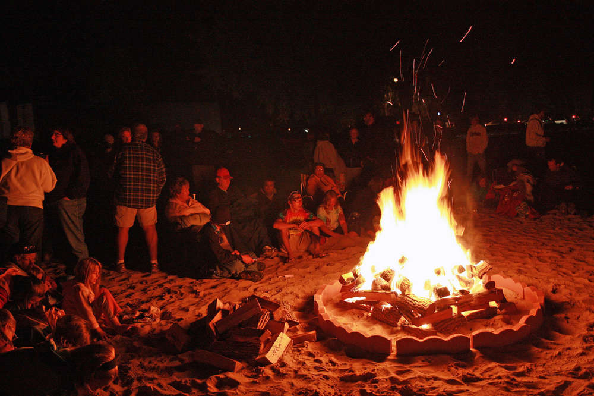
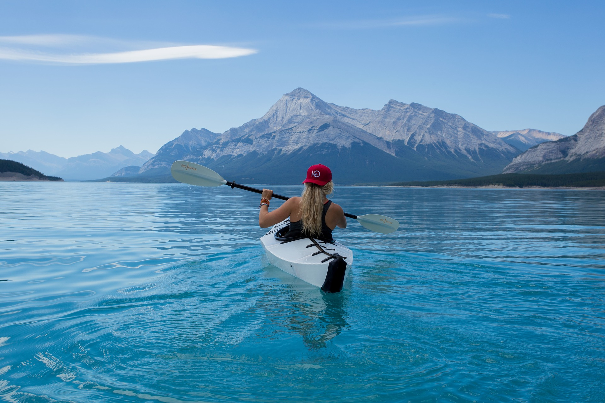
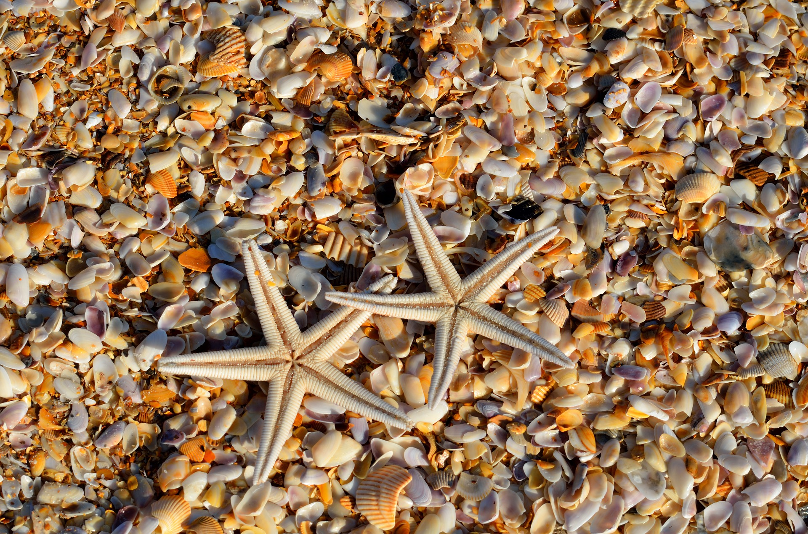

Pulau Tenggol– Hidupan Marin Bertaraf Dunia
Pulau Tenggol merupakan satu lagi pulau yang sangat cantik yang hanya terletak kira-kira 50 minit perjalanan dari jeti Kuala Dungun. Sekiranya anda ke jeti Kuala Dungun, jangan lupa untuk singgah di atas Jambatan Baru Dungun untuk melihat keindahan muara sungai Dungun.
Walaupun pulaunya hanya sepanjang 3 km sahaja, namun Pulau Tenggol sering menjadi destinasi untuk mereka yang nak menyelam di perairan yang cantik. Dahulunya pulau ini tidak popular dan tidak berpenghuni namun kini mempunyai beberapa hotel dan resorts tepi pantai yang selesa untuk pelancong. Berdasarkan sejarah, dahulunya Pulau Tenggol merupakan penempatan sementara orang Vietnam yang terperangkap selepas Perang Vietnam.
Bagi yang sukakan cabaran jungle trekking dan mendaki bukit, anda boleh menaiki bukit di tengah Pulau Tenggol ini yang setinggi 800 kaki dan yang paling best, boleh bergambar & menikmati keindahan sekeliling pulau dari puncak.
Sekiranya anda kaki menyelam, anda patut mencuba scuba diving di Pulau Tenggol yang dianggap setara dengan lokasi menyelam bertaraf dunia yang lain.
Selain batuan terumbu karang yang indah di dasar lautan, anda juga boleh berjumpa dengan hidupan marin yang menarik seperti humphead parrotfish, giant stingray, leopard sharks, bat fishes, whale sharks dan schooling jacks. Kalau bernasib baik, Whale Shark juga boleh kelihatan di sesetengah tempat di sini daripada bulan Ogos-Oktober pada setiap tahun.
Peta ke Pulau Tenggol



Pulau Tenggol terletak di laut Terengganu berdekatan Dungun. Pulau Tenggol masih terpulihara dibandingkan dengan pulau-pulau lain. Ia adalah sebuah pulau di pesisir pantai Terengganu yang cukup istimewa untuk dikunjungi.